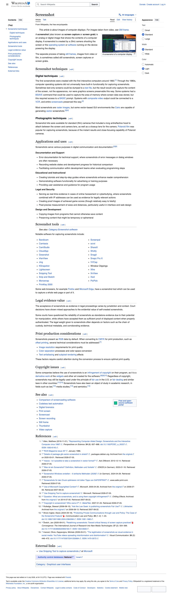

How to install and use OpenScreenShot, the open-source screenshot and annotation extension for Chrome.
OpenScreenShot is available on the Chrome Web Store.
Click the OpenScreenShot icon in your toolbar and choose one of the three capture modes. The screenshot is processed locally in your browser. There are four ways to start a capture:
chrome://extensions/shortcuts.
The Delay row in the popup holds a capture for 3, 5, or 10 seconds, and the toolbar badge counts down. Use it for hover states, dropdown menus, and tooltips that close the moment you click somewhere else.
Captures the entire scrolling page and stitches it into one image. The extension scrolls the page viewport by viewport, captures each tile, and composites them together. Fixed headers are captured on the first tile and composited once at the top. Pages that scroll an inner element instead of the window work too.
Captures the current viewport instantly. No scrolling. Use this for a quick screenshot of what is on screen right now.
Click and drag to draw a rectangle. Resize handles appear on each edge and corner. Use the arrow keys to nudge the selection by one pixel at a time, or hold Shift to move it ten pixels at a time. Press Enter to confirm or Esc to cancel.
The After capture row in the popup picks what a finished capture does. It applies to every entry point: the popup buttons, the keyboard shortcuts, and the right-click menu.
Clipboard and Download open no tab, so the toolbar badge is the confirmation. A failed capture flashes ! on the badge. Reopen last in the popup footer opens the most recent capture in the editor at any time.
The editor opens in a full tab and loads the most recent capture from local storage. Each tool has a one-letter shortcut.
Hold Shift while you draw for square rectangles and 45° lines and arrows. The style bar carries an 8-color palette on 1–8, a custom color, recent colors, three stroke widths, and a font-size control. Your choices are remembered across sessions. Undo and redo are Ctrl+Z / Ctrl+Shift+Z, or ⌘Z / ⌘⇧Z on macOS.
The Beautify panel in the top bar frames the screenshot for sharing: padding, corner radius, and drop-shadow sliders, plus six gradient presets, a custom solid color, or a transparent background. The frame previews live and travels into every export, the clipboard, and PDF.
Drop an image file onto the editor stage, or paste one with Ctrl+V / ⌘V outside a text field. The import takes the same seat a capture takes, so every tool, the beautify frame, and every export path keep working, and the top bar reads Imported. Importing replaces the canvas, so the editor asks first when there are annotations to lose.
Click Export in the top bar of the editor, or press Ctrl+S / ⌘S. Choose a format:
Scale exports at 25, 50, 100, or 200 %, or at an exact pixel width. It is hidden for PDF, which sizes to the page instead. A size past Chrome's canvas limit is refused rather than written as an empty file.
Ctrl+C / ⌘C copies the finished image straight to the clipboard. The export dialog can also save its current settings as your new defaults.
Your edits are saved locally as you work. If the editor tab closes or crashes, the next editor tab offers the draft back. Restoring is always a click, so a stale draft never replaces a capture you meant to start fresh. A cropped image gets its own draft, so annotations never restore against the wrong picture.
Press ? in the editor for the full sheet. Beyond the tool letters above:
Open the gear icon in the popup to set:
{date},
{time}, {title}, {domain}, {w}, or
{h}. A live preview shows the result.
Settings live in local storage on this device. Reset to defaults at the bottom of the panel takes two clicks.
openscreenshot (npm) is a separate, optional, local tool for scripting
screenshots from the command line or from an AI agent. It drives the Chrome already on
your machine — no browser download, no hosted service. Set CHROME_PATH if
your Chrome cannot be found automatically.
npx openscreenshot shot https://example.com --out shot.png --fullAs an MCP server, add this to your MCP client config:
{ "command": "npx", "args": ["openscreenshot", "serve"] }
Then call the capture_screenshot tool with
{ "url": "https://example.com" }.

OpenScreenShot processes everything locally in your browser. Captures are stored in Chrome local storage and are not uploaded to any server. The extension has no analytics, no telemetry, and no third-party services.
See the Privacy Policy for the full details.
See the Support & FAQ page for common questions and known limitations. If you need more help, open an issue on GitHub.
Free, open-source, and private. Available on the Chrome Web Store.
Add to Chrome